Data preparation: Pilot study - Facebook
viernes 21 agosto 2020 19:26:50
load packages
library(sjlabelled)
library(stringr)
library(stringi)
library(dplyr)
library(datasets)
library(data.table)
library(tidyr)
library(summarytools)
library(sjPlot)
library(stargazer)
library(knitr)
library(tidyverse)
library(mice)
library(texreg)
library(lme4)
library(sessioninfo) 1 Data preparation
data01 <- read_spss(path = "input/data/original/factorial_mod-v02_June.sav")
load(file = "input/data/proc/vig_dim.RData")Fieldwork date: 03 junio 2020 to 08 junio 2020
1.1 Filter data
Criterios
- Sujetos que Aceptaron participar en el estudio (consen = 1)
- Sujetos que respondieron pregunta sobre “lo que Ud. entiende por impuesto a la renta:”
# data01 <- data01 %>% filter(Finished==1,Progress==100,!is.na(Q5231))
data01 <- data01 %>% filter(consen==1,!is.na(Q5231))
# data01 <- data01 %>% filter(consen==1,!is.na(Q5231))
deck_cod01<- c("FL_431_DO_","FL_446_DO_","FL_467_DO_","FL_481_DO_","FL_494_DO_",
"FL_507_DO_","FL_520_DO_","FL_533_DO_","FL_546_DO_","FL_559_DO_")
decks01<- data01 %>% select(ResponseId,"finished"=Finished,
starts_with("p_a_"),
starts_with("p_b_"),
matches(paste(deck_cod01, collapse="|")))
for (i in deck_cod01) {
names(decks01) <- names(decks01) %>% str_replace_all(pattern = i,replacement = "deck_vig")
}
decks01<- remove_label(decks01)La mediana de duración del cuestionario es 11 minutos
tiempo<- data01 %>% filter(Finished==1,Progress==100,!is.na(Q5231)) %>%
select(Duration__in_seconds_) %>% summarise(tiempo=median(Duration__in_seconds_/60))Excluyendo las respuestas incompletas (finished= 0) la mediana de duración del cuestionario es 16.34 minutos
- Seleccionamos las variables que identifican la viñeta y el deck al que pertenece.
nam01<- decks01 %>% select(starts_with("deck_vig")) %>% names()
decks02 <- data.frame(!(is.na(decks01[nam01])));decks02[decks02==FALSE] <- NA
decks03 <- bind_cols(select(decks01,-nam01),decks02)
w <- which(decks03=="TRUE",arr.ind=TRUE)
decks03[w] <- names(decks03)[w[,"col"]]Agregar dummy para termina/no-termina el cuestionario.
2 Base de datos de wide a long
wide <- setDT(decks03)
long01<- melt(wide, id.vars = "ResponseId",
variable.name = "wave",
measure = patterns("^p_a_","^p_b_","deck_vig"),
value.name = c("taxperc","taxjust","deck_vig"));long01$wave <- NULL
long01 <- na.omit(long01)
long01$deck_vig <- str_replace_all(long01$deck_vig,pattern = "deck_vig",replacement = "")3 Recode variables de impuesto percibido y justo
long01$taxperc <- stri_replace_all(long01$taxperc, "", fixed=c("$")) #delete $ symbol
long01$taxperc <- stri_replace_all(long01$taxperc, "", fixed=c(".")) #delete .
long01$taxperc <- as.numeric(long01$taxperc) # transform to numeric
# summary(long01$taxperc)
long01$taxjust <- stri_replace_all(long01$taxjust, "", fixed=c("$")) #delete $ symbol
long01$taxjust <- stri_replace_all(long01$taxjust, "", fixed=c(".")) #delete .
long01$taxjust <- as.numeric(long01$taxjust) # transform to numeric
# summary(long01$taxjust) stargazer(x = long01,type = "html",median = T,digits = 0, title = "<caption>(#tab:des01) Descriptivos</caption> ")| Statistic | N | Mean | St. Dev. | Min | Pctl(25) | Median | Pctl(75) | Max |
| taxperc | 1,299 | 849,911,722 | 30,520,235,030 | 0 | 0 | 50,000 | 200,000 | 1,100,000,015,000 |
| taxjust | 1,289 | 244,894 | 1,127,269 | 0 | 0 | 24,000 | 150,000 | 24,000,000 |
3.1 Merge respondentes y viñetas
- Pegar sociodemograficos de respondente a base long.
long02<- left_join(long01,data01[,c("ResponseId","Finished","sexo","edad","educ","ingresos","act_prin","comuna")]) - Nombrar variables nivel respondente
long02<- long02 %>% rename("respondeid"=ResponseId,"sexo.re"=sexo,"edad.re"=edad,"educ.re"=educ, "ingresos.re" =ingresos, "estlab.re"=act_prin,"finished"=Finished) - Nombrar variables de nivel viñeta (generadas en SAS)
vig_dat<- vig_dat %>% rename("sexo.vig"=sexo,
"apellido.vig"=apellido,
"edad.vig"=edad,
"nse_ori.vig"="nivel_socioeconómico_de_origen",
"educ.vig"=nivel_educativo,
"necesidades.vig"=necesidades,
"educ_madre.vig"="educación_de_la_madre",
"ingresos.vig"=ingresos)- Merge datos de viñetas a base long (nivel respondente + viñetas)
vig_resp<- left_join(long02,vig_dat,by =c("deck_vig")) %>% select(respondeid,deck,id,deck_vig,everything(),-p1) 4 Etiquetado variables
4.1 Etiqueta nombre de variables
vig_resp <- vig_resp %>% var_labels(respondeid = "Id Respondent",
finished="Finished survey",
deck = "Id Deck",
id = "Id Vignette",
deck_vig = "Id deck and vignette",
taxperc = "Perceived income tax",
taxjust = "Just income tax",
sexo.re = "Gender (respondent level)",
edad.re = "Age (respondent level)",
educ.re = "Education (respondent level)",
ingresos.re = "Income in CLP (respondent level)",
estlab.re = "Job status (respondent level)",
comuna = "Comuna (respondent level)",
sexo.vig = "Gender (vignette level)",
apellido.vig = "Etnicity - surname (vignette level)",
edad.vig = "Age (vignette level)",
nse_ori.vig = "SES of origin (vignette level)",
educ.vig = "Education (vignette level)",
necesidades.vig = "Needs - number of children (vignette level)",
educ_madre.vig = "Mother's education level (vignette level)",
ingresos.vig = "Income in CLP (vignette level)")4.2 Etiquetado valores de variable
lb.vig_resp <- get_labels(vig_resp)vig_resp$sexo.vig <- set_labels(vig_resp$sexo.vig ,labels = c("Male"=1,"Female"=2))
vig_resp$apellido.vig <- set_labels(vig_resp$apellido.vig ,labels = c("Spanish"=1,"Basque-Castilian"=2,"European"=3,"Indigenous"=4))
vig_resp$edad.vig <- set_labels(vig_resp$edad.vig ,labels = c("35 years"=1,"45 years"=2,"55 years"=3))
vig_resp$nse_ori.vig <- set_labels(vig_resp$nse_ori.vig ,labels = c("Public"=1,"Charter"=2,"Private"=3))
vig_resp$educ.vig <- set_labels(vig_resp$educ.vig ,labels = c("Complete basic education"=1,"Complete secondary education"=2,
"Technical professional education"=3,"Full university education"=4,"Graduate Studies"=5))
vig_resp$necesidades.vig<- set_labels(vig_resp$necesidades.vig,labels = c("Do not have children"=1,"Has 1 child"=2,"Has 2 children"=3,"Has 5 children"=4))
vig_resp$educ_madre.vig <- set_labels(vig_resp$educ_madre.vig ,labels = c("Complete basic education"=1,"Complete secondary education"=2,
"Technical professional education"=3,"Full university education"=4,"Graduate Studies"=5))
vig_resp$ingresos.vig <- set_labels(vig_resp$ingresos.vig ,labels = c("$320.500"=1,"$655.000"=2,"$1.200.000"=3,"$2.500.000"=4,"$4.300.000"=5))vig_resp$sexo.re <- set_labels(x = vig_resp$sexo.re, labels = c("Man"=1,"Woman"=2))
vig_resp$educ.re <- set_labels(x = vig_resp$educ.re,
labels = c("No formal education"=1,
"Primary education incomplete"=2,
"Complete primary education"=3,
"Incomplete secondary education"=4,
"Complete secondary education"=5,
"Non-university higher education incomplete"=6,
"Complete non-university higher education"=7,
"Incomplete college education"=8,
"Complete college education"=9,
"Postgraduate studies, master's, doctoral"=10))
vig_resp$estlab.re <- set_labels(vig_resp$estlab.re,
labels = c(
"Working for pay full-time" = 1,
"Working for pay part-time or do odd jobs" = 2,
"Study and work" = 3,
"Just study" = 4,
"Retired or pensioned" = 5,
"Unemployed, looking for work" = 6,
"Performs unpaid work (household chores, babysitting and others)" = 7,
"It is ill or has a disability" = 8,
"Not studying, not working and not looking for work" = 9))
vig_resp$ingresos.re <- set_labels(vig_resp$ingresos.re,
labels = c("Less than $35.000 monthly disposable income" = 1 ,
"From $35.001 to $56.000 monthly disposable income" = 2 ,
"From $56.001 to $78.000 monthly disposable income" = 3 ,
"From $78.001 to $101.000 monthly disposable income" = 4 ,
"From $101.001 to $134.000 monthly disposable income" = 5 ,
"From $134.001 to $179.000 monthly disposable income" = 6 ,
"From $179.001 to $224.000 monthly disposable income" = 7 ,
"From $224.001 to $291.000 monthly disposable income" = 8 ,
"From $291.001 to $358.000 monthly disposable income" = 9 ,
"From $358.001 to $448.000 monthly disposable income" = 10,
"From $448.001 to $1.000.000 monthly disposable incomes" = 11,
"From $1.000.001 to $2.000.000 monthly disposable income" = 12,
"From $2.000.001 to $3.000.000 monthly disposable income" = 13,
"More than $3.000.000 monthly disposable income" = 14))5 Explorar datos
5.1 Patrón de respuesta de $0
- Exploramos el patrón de respuesta para valores $0 en variables de impuestos (
taxpercytaxjust)
| Dimensiones | Operacionalización | Niveles |
|---|---|---|
| Ingresos | Ingresos mensuales | 1. $320.500 |
| 2. $655.000 | ||
| 3. $1.200.000 | ||
| 4. $2.500.000 | ||
| 5. $4.300.000 |
plot_scatter(x =ingresos.vig,
y = taxperc,data = filter(vig_resp,taxperc==0),title = "Distribución de $0 en taxperc según ingresos de viñeta")
plot_scatter(x =ingresos.vig,
y = taxjust,data = filter(vig_resp,taxjust==0),title = "Distribución de $0 en taxjust según ingresos de viñeta")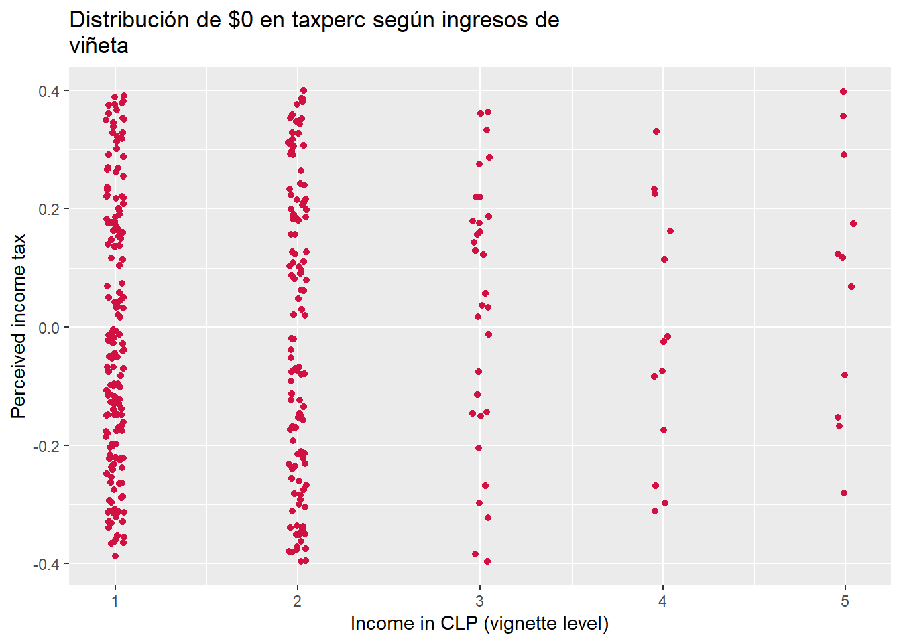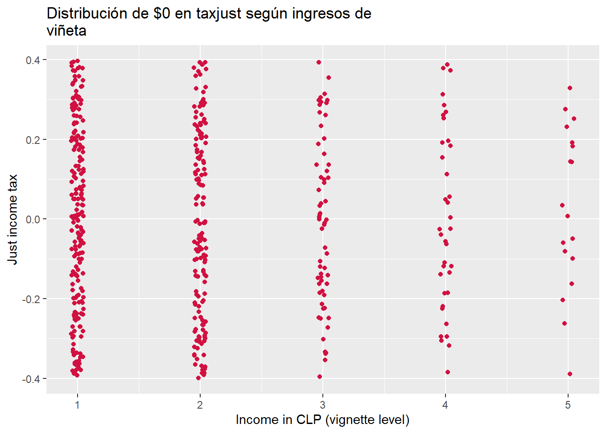
- Vemos que tanto para
taxpercytaxjustla concentración de respuestas $0 se encuentra en los niveles de ingreso 1 y 2. - Según el SII el impuesto a la renta aplica para aquellos que perciben ingresos superiores a 13,5 ($680.022CLP) UTM.
tab.pat <- vig_resp %>% group_by(respondeid) %>% summarise(mean_taxperc=mean(x = taxperc,na.rm = T),
mean_taxjust=mean(x = taxjust,na.rm = T)) %>% arrange(mean_taxperc) %>% arrange(mean_taxjust)
n<- tab.pat %>% filter(mean_taxperc==0 & mean_taxjust==0)
tab.pat %>% filter(mean_taxperc==0 | mean_taxjust==0)## # A tibble: 14 x 3
## respondeid mean_taxperc mean_taxjust
## <chr> <dbl> <dbl>
## 1 R_1eEq2vohH54d9Jc 0 0
## 2 R_3DqIrQ0XjThtoV1 0 0
## 3 R_4TPa5tTQ5DDdN9n 0 0
## 4 R_27cZEmRRauthBda 10617. 0
## 5 R_1cYNEU0QsTWM4Rd 22750 0
## 6 R_1mViTiQVOdH7Sdj 57500 0
## 7 R_23fMMMjUrkNav5d 61417. 0
## 8 R_6DOl9lkAsgIG0Fj 65500 0
## 9 R_1Izq6z49kp0lL9S 100000 0
## 10 R_1JOZZBy7Ol8e7L3 171667. 0
## 11 R_2wQTmX6Vid2nYzX 272500 0
## 12 R_Oq8S9y6hq6HWO6l 350000 0
## 13 R_2CxpIPkula53MHz NaN 0
## 14 R_3NCZntlAIs2YhJE 0 305000- Vemos que solamente hay 3 sujetos que responde $0 en
taxpercytaxjust - se puede observar que existen respondentes que poseen media 0 en sus respuestas de
taxjust, lo que se interpreta como que en las 12 viñetas evaluadas respondieron $0.
NOTA se excluyen el(los) caso(s) que responde $0 en
taxpercytaxjustpara todas las viñetas
tab.pat <- tab.pat %>% filter(mean_taxperc==0 & mean_taxjust==0)
vig_resp <- vig_resp %>% filter(!(respondeid %in% tab.pat$respondeid)) kable(rbind(taxperc= quantile(long01$taxperc, probs = c(0.90,0.91,0.92,0.93,0.94,0.95,0.96,0.97,0.98,0.99,1.00),na.rm = T),
taxjust= quantile(long01$taxjust, probs = c(0.90,0.91,0.92,0.93,0.94,0.95,0.96,0.97,0.98,0.99,1.00),na.rm = T)),
caption = "Percentiles 90 a 100 para taxper y taxjust")| 90% | 91% | 92% | 93% | 94% | 95% | 96% | 97% | 98% | 99% | 100% | |
|---|---|---|---|---|---|---|---|---|---|---|---|
| taxperc | 450000 | 500000 | 500000 | 600000 | 650000 | 800000 | 860000 | 1290000 | 3000000 | 7000000 | 1100000015000 |
| taxjust | 430000 | 430000 | 500000 | 500000 | 648600 | 800000 | 860000 | 1036000 | 1500000 | 4300052 | 24000000 |
5.2 Revisar Patron de NA dentro de viñetas
tax_na_wvig<- vig_resp %>% group_by(respondeid, deck,id,deck_vig) %>% summarise(taxperc_na=sum(is.na(taxperc)),taxjust_na=sum(is.na(taxjust))) %>% ungroup()
tax_na_wvig$id_vig_deck <- paste0("d",str_pad(tax_na_wvig$deck, 2, pad = "0"),"v",str_pad(tax_na_wvig$id, 2, pad = "0"))n_mis_tax<- tax_na_wvig %>% group_by(id_vig_deck) %>% summarise(n_taxperc=sum(taxperc_na),n_taxjust=sum(taxjust_na))# plot_scatter(data = n_mis_tax,x = id_vig_deck,y = n_taxperc,title = "Missing en tax percibido") +theme(axis.text.x = element_text(angle = 90))
ggplot(data = n_mis_tax,aes(x = id_vig_deck,y = n_taxperc)) +
geom_bar(stat = "identity") +
# scale_y_continuous(breaks = c(0,1,2)) +
labs(title = "Missing en tax percibido",
subtitle = "Análisis incluye casos que no terminaron el cuestionario")+
xlab(label = NULL)+
theme(axis.text.x = element_text(angle = 90))Figure 5.1: Missing en tax percibido
# plot_scatter(data = n_mis_tax,x = id_vig_deck,y = n_taxjust,title = "Missing en tax justo") + theme(axis.text.x = element_text(angle = 90))
ggplot(data = n_mis_tax,aes(x = id_vig_deck,y = n_taxjust)) +
geom_bar(stat = "identity") +
# scale_y_continuous(breaks = c(0,1,2)) +
labs(title = "Missing en tax justo",
subtitle = "Análisis incluye casos que no terminaron el cuestionario")+
xlab(label = NULL)+
theme(axis.text.x = element_text(angle = 90))Figure 5.2: Missing en tax justo
Nota: A nivel descriptivo no parece haber un marcado de NA asociado a viñetas. No obstante es importante ver que las viñetas con mayor cantidad de missing son las del deck 02 y 08.
5.3 Revisar Patron de NA de viñetas within sujetos
tab_na<- tax_na_wvig %>% filter(taxperc_na >0 | taxjust_na >0)
tab_na## # A tibble: 913 x 7
## respondeid deck id deck_vig taxperc_na taxjust_na id_vig_deck
## <chr> <int> <int> <chr> <int> <int> <chr>
## 1 R_12F4Hij54Lg4ani 7 1 71 1 1 d07v01
## 2 R_12F4Hij54Lg4ani 7 2 72 1 1 d07v02
## 3 R_12F4Hij54Lg4ani 7 3 73 1 1 d07v03
## 4 R_12F4Hij54Lg4ani 7 4 74 1 1 d07v04
## 5 R_12F4Hij54Lg4ani 7 5 75 1 1 d07v05
## 6 R_12F4Hij54Lg4ani 7 6 76 1 1 d07v06
## 7 R_12F4Hij54Lg4ani 7 7 77 1 1 d07v07
## 8 R_12F4Hij54Lg4ani 7 8 78 1 1 d07v08
## 9 R_12F4Hij54Lg4ani 7 9 79 1 1 d07v09
## 10 R_12F4Hij54Lg4ani 7 10 710 1 1 d07v10
## # ... with 903 more rows- Seleccionamos los sujetos que tienen missing en al menos 1 de las variables de impuestos
tab_na_gt0 <- tab_na %>% group_by(respondeid) %>% summarise(n_taxperc_na=sum(taxperc_na),n_taxjust_na=sum(taxjust_na)) %>% arrange(n_taxperc_na,n_taxjust_na)
n2<- tab_na_gt0 %>% filter(n_taxperc_na>=5 | n_taxjust_na>=5) %>% dim()Nota: Existen 82 respondentes que tienen 5 o más missing en
taxpercotaxjust
idresp_gt5 <- tab_na_gt0 %>% filter(n_taxperc_na>=5 | n_taxjust_na>=5)
idresp_gt5## # A tibble: 82 x 3
## respondeid n_taxperc_na n_taxjust_na
## <chr> <int> <int>
## 1 R_2zr5jxoLyHGEEZU 5 5
## 2 R_31baZjQptVijeSG 5 5
## 3 R_3rIhQNXRJP2xPeU 5 5
## 4 R_BRivf7BUUiQEFW1 5 5
## 5 R_uz9qMiTIbPl38bf 5 5
## 6 R_2wujoBd6ryKqHpP 5 6
## 7 R_2Pvc8zKXPzO9zAC 6 6
## 8 R_2rSFf50GErGbulE 6 6
## 9 R_xaQzTbeas2Tzo41 6 6
## 10 R_12gMsghcrLmITZJ 7 7
## # ... with 72 more rowsNota: Se excluyen de la muestra aquellos sujetos que tienen 5 o más missing en
taxpercotaxjust
5.4 Modelos para respuesta $0
5.4.1 logit
- Creamos la variable dummy donde 1= “sujeto responde 0” y 0 = “sujeto responde != 0”
vig_resp$pertax.0 <- ifelse(test = vig_resp$taxperc==0,yes = 1,no = 0)
vig_resp$pertax.0 <- as.factor(vig_resp$pertax.0)
summary(vig_resp$pertax.0)## 0 1 NA's
## 956 329 899vig_resp$justax.0 <- ifelse(test = vig_resp$taxjust==0,yes = 1,no = 0)
vig_resp$justax.0 <- as.factor(vig_resp$justax.0)
summary(vig_resp$justax.0)## 0 1 NA's
## 809 466 909vig_resp<- vig_resp %>% var_labels(justax.0 = "Response $0 | Just income tax",
pertax.0 ="Response $0 | Perceived incom tax")# vig_resp<- vig_resp %>% filter(!(is.na(pertax.0)) | !(is.na(justax.0)))m01 <- glm(pertax.0~1+sexo.vig+edad.vig+educ.vig+apellido.vig+nse_ori.vig+necesidades.vig+educ_madre.vig+ingresos.vig+respondeid+finished,data = vig_resp,family=binomial(link= "logit"))
m02 <- glm(justax.0~1+sexo.vig+edad.vig+educ.vig+apellido.vig+nse_ori.vig+necesidades.vig+educ_madre.vig+ingresos.vig+respondeid+finished,data = vig_resp,family=binomial(link= "logit")) texreg::htmlreg(l = list(m01,m02),omit.coef = "respondeid",custom.model.names = c("pertax.0","justax.0"),
caption = "(\\#tab:tab-logit01) Regresion logística",
doctype = F, caption.above = T,
custom.note = "Efectos fijos por id respondente; *** p < 0.001, ** p < 0.01, * p < 0.05")| pertax.0 | justax.0 | |
|---|---|---|
| (Intercept) | 4.67* | 6.82** |
| (1.96) | (2.20) | |
| sexo.vig | 0.23 | 0.15 |
| (0.46) | (0.44) | |
| edad.vig | 0.09 | -0.43 |
| (0.27) | (0.29) | |
| educ.vig | 0.06 | -0.06 |
| (0.16) | (0.16) | |
| apellido.vig | 0.23 | 0.19 |
| (0.19) | (0.20) | |
| nse_ori.vig | -0.07 | -0.03 |
| (0.26) | (0.26) | |
| necesidades.vig | -0.06 | 0.67** |
| (0.19) | (0.23) | |
| educ_madre.vig | -0.31 | 0.07 |
| (0.18) | (0.18) | |
| ingresos.vig | -4.80*** | -5.59*** |
| (0.44) | (0.53) | |
| AIC | 520.64 | 506.78 |
| BIC | 1315.05 | 1294.84 |
| Log Likelihood | -106.32 | -100.39 |
| Deviance | 212.64 | 200.78 |
| Num. obs. | 1285 | 1275 |
| Efectos fijos por id respondente; *** p < 0.001, ** p < 0.01, * p < 0.05 | ||
- Se omiten los coeficientes para cada
respondeid
5.4.2 logit (multinivel)
m01.me <- glmer(pertax.0~1 + (1|respondeid),data = vig_resp,family = "binomial")
m02.me <- glmer(justax.0~1 + (1|respondeid),data = vig_resp,family = "binomial")htmlreg(list(m01.me,m02.me),
custom.model.names = c("pertax.0","justax.0"),
caption = "(\\#tab:tab-logit02) Modelos de regresión logística multinivel (nulos)",
doctype = F, caption.above = T)| pertax.0 | justax.0 | |
|---|---|---|
| (Intercept) | -1.67*** | -0.92*** |
| (0.18) | (0.16) | |
| AIC | 1319.58 | 1483.16 |
| BIC | 1329.90 | 1493.46 |
| Log Likelihood | -657.79 | -739.58 |
| Num. obs. | 1285 | 1275 |
| Num. groups: respondeid | 146 | 145 |
| Var: respondeid (Intercept) | 2.27 | 2.44 |
| p < 0.001; p < 0.01; p < 0.05 | ||
- Calculamos la ICC usando el método de variable latente: donde \(\pi^2/3\) = 3.2865333
pi2_3<- (3.14^2)/3
tau2.1<- m01.me@theta^2 #tau2 variance random intercept
tau2.2<- m02.me@theta^2 #tau2 variance random intercept
icc01 <- tau2.1/(tau2.1+pi2_3) #icc taxperc
icc02 <- tau2.2/(tau2.2+pi2_3) #icc taxjust
kable(rbind("taxperc"=icc01,"taxjust"=icc02),col.names = c("ICC"),digits = 3,caption = "Intra-class correlation")| ICC | |
|---|---|
| taxperc | 0.408 |
| taxjust | 0.426 |
5.4.2.1 Estimación modelos de intercepto aleatorio para $0 entaxperc y taxjust
m03.me <- glmer(pertax.0~sexo.vig+edad.vig+educ.vig+apellido.vig+nse_ori.vig+necesidades.vig+educ_madre.vig +(1|respondeid),data = vig_resp,family = "binomial")
m03.me.1 <- glmer(pertax.0~sexo.vig+edad.vig+educ.vig+apellido.vig+nse_ori.vig+necesidades.vig+educ_madre.vig+ingresos.vig +(1|respondeid),data = vig_resp,family = "binomial")
m03.me.2 <- glmer(pertax.0~sexo.vig+edad.vig+educ.vig+apellido.vig+nse_ori.vig+necesidades.vig+educ_madre.vig+ingresos.vig+educ.re + (1 |respondeid),data = vig_resp,family = "binomial")
m03.me.3 <- glmer(pertax.0~sexo.vig+edad.vig+educ.vig+apellido.vig+nse_ori.vig+necesidades.vig+educ_madre.vig+ingresos.vig*educ.re + (1 + ingresos.vig |respondeid),data = vig_resp,family = "binomial")
m04.me <- glmer(justax.0~sexo.vig+edad.vig+educ.vig+apellido.vig+nse_ori.vig+necesidades.vig+educ_madre.vig+ (1 | respondeid),data = vig_resp, family = "binomial")
m04.me.1 <- glmer(justax.0~sexo.vig+edad.vig+educ.vig+apellido.vig+nse_ori.vig+necesidades.vig+educ_madre.vig+ingresos.vig + (1 | respondeid),data = vig_resp, family = "binomial")
m04.me.2 <- glmer(justax.0~sexo.vig+edad.vig+educ.vig+apellido.vig+nse_ori.vig+necesidades.vig+educ_madre.vig+ingresos.vig+educ.re + (1 | respondeid),data = vig_resp, family = "binomial")
m04.me.3 <- glmer(justax.0~sexo.vig+edad.vig+educ.vig+apellido.vig+nse_ori.vig+necesidades.vig+educ_madre.vig+ingresos.vig*educ.re + (1+ingresos.vig | respondeid),data = vig_resp, family = "binomial")htmlreg(list(m03.me,m03.me.1,m03.me.2,m03.me.3,m04.me,m04.me.1,m04.me.2,m04.me.3),
custom.model.names = c("pertax.0","pertax.0","pertax.0","pertax.0","justax.0","justax.0","justax.0","justax.0"),
single.row = F,
doctype = F,
caption = "(\\#tab:tab-glm01) Modelos de regresión logística multinivel",
caption.above = T)| pertax.0 | pertax.0 | pertax.0 | pertax.0 | justax.0 | justax.0 | justax.0 | justax.0 | |
|---|---|---|---|---|---|---|---|---|
| (Intercept) | -2.05*** | 5.19*** | 0.46 | -9.81 | -1.18* | 8.22*** | 4.32 | -1.37 |
| (0.52) | (1.35) | (2.54) | (6.43) | (0.48) | (1.56) | (2.92) | (4.11) | |
| sexo.vig | -0.04 | 0.00 | 0.04 | -0.26 | -0.09 | -0.10 | -0.11 | -0.21 |
| (0.15) | (0.33) | (0.33) | (0.39) | (0.14) | (0.33) | (0.33) | (0.36) | |
| edad.vig | 0.06 | 0.01 | 0.07 | 0.05 | 0.02 | -0.19 | -0.19 | -0.17 |
| (0.09) | (0.20) | (0.20) | (0.23) | (0.08) | (0.20) | (0.20) | (0.22) | |
| educ.vig | -0.02 | 0.03 | 0.02 | -0.03 | 0.02 | 0.09 | 0.07 | 0.06 |
| (0.05) | (0.12) | (0.11) | (0.13) | (0.05) | (0.11) | (0.11) | (0.12) | |
| apellido.vig | 0.02 | 0.14 | 0.17 | 0.11 | -0.01 | 0.08 | 0.08 | 0.11 |
| (0.07) | (0.14) | (0.14) | (0.16) | (0.06) | (0.14) | (0.14) | (0.15) | |
| nse_ori.vig | 0.06 | -0.04 | -0.03 | -0.02 | -0.01 | -0.04 | -0.04 | 0.01 |
| (0.09) | (0.20) | (0.19) | (0.22) | (0.08) | (0.20) | (0.20) | (0.20) | |
| necesidades.vig | 0.06 | -0.02 | -0.05 | -0.04 | 0.08 | 0.29 | 0.29 | 0.32 |
| (0.07) | (0.15) | (0.14) | (0.17) | (0.06) | (0.15) | (0.15) | (0.16) | |
| educ_madre.vig | 0.03 | -0.17 | -0.20 | -0.25 | 0.03 | -0.03 | -0.05 | -0.03 |
| (0.05) | (0.12) | (0.12) | (0.14) | (0.05) | (0.12) | (0.12) | (0.13) | |
| ingresos.vig | -3.87*** | -3.83*** | 0.21 | -4.34*** | -4.31*** | -2.47 | ||
| (0.38) | (0.38) | (2.18) | (0.47) | (0.47) | (1.60) | |||
| educ.re | 0.62* | 2.37** | 0.53 | 1.52** | ||||
| (0.29) | (0.86) | (0.35) | (0.56) | |||||
| ingresos.vig:educ.re | -0.68* | -0.38 | ||||||
| (0.29) | (0.21) | |||||||
| AIC | 1331.44 | 633.81 | 630.91 | 589.50 | 1494.34 | 685.71 | 685.32 | 667.17 |
| BIC | 1377.86 | 685.40 | 687.65 | 661.72 | 1540.70 | 737.22 | 741.98 | 739.28 |
| Log Likelihood | -656.72 | -306.91 | -304.45 | -280.75 | -738.17 | -332.86 | -331.66 | -319.58 |
| Num. obs. | 1285 | 1285 | 1285 | 1285 | 1275 | 1275 | 1275 | 1275 |
| Num. groups: respondeid | 146 | 146 | 146 | 146 | 145 | 145 | 145 | 145 |
| Var: respondeid (Intercept) | 2.29 | 33.40 | 30.58 | 101.97 | 2.48 | 47.95 | 46.91 | 47.33 |
| Var: respondeid ingresos.vig | 7.78 | 4.28 | ||||||
| Cov: respondeid (Intercept) ingresos.vig | -22.45 | -5.35 | ||||||
| p < 0.001; p < 0.01; p < 0.05 | ||||||||
Vemos que el ingreso de la viñeta se asocia negativa y estadísticamente significativa con responder $0.
plot01<- plot_model(m03.me.3,title = "Modelo logit multinivel con interacción - tax percibido")
plot01.int<- plot_model(m03.me.3,type = "int", title = "Ingreso (vig) x Educación (res) - tax percibido ") +theme(legend.position = "bottom")
plot_grid(list(plot01, plot01.int), tags = TRUE,margin = c(0.5,0.5,0.5,0.5))Figure 5.3: Resultados para tax percibido
La asociación negativa del ingreso de la viñeta es moderado negativamente por la educación del respondente.
6 Calcular variables de impuestos
6.1 Distribución
sjPlot::plot_frq(data = vig_resp$taxperc,type = "histogram")
sjPlot::plot_frq(data = vig_resp$taxjust,type = "histogram")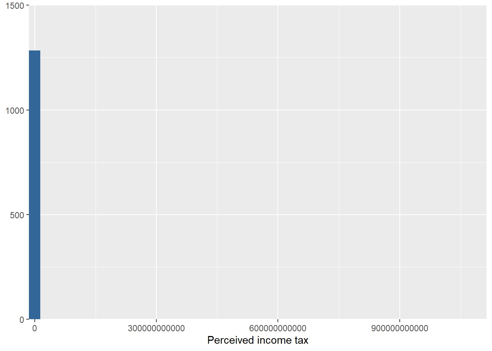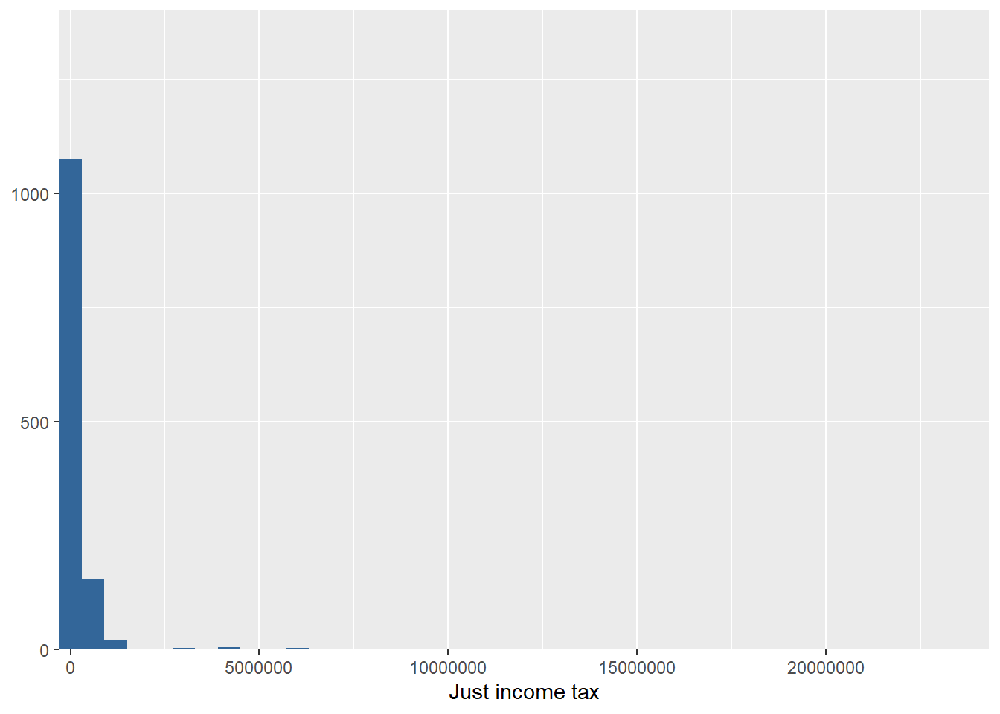
Debido al sesgo presentado en los gráficos, revisamos los valores de la distribución del 5% superior para identificar posibles outliers en la parte alta
kable(rbind(taxperc= quantile(long01$taxperc, probs =seq(0.95, 1, by = 0.005),na.rm = T),
taxjust= quantile(long01$taxjust, probs =seq(0.95, 1, by = 0.005),na.rm = T)),
caption = "Percentiles 95 a 100 para taxper y taxjust") %>% kable_styling(font_size = 12,full_width = F)| 95% | 95.5% | 96% | 96.5% | 97% | 97.5% | 98% | 98.5% | 99% | 99.5% | 100% | |
|---|---|---|---|---|---|---|---|---|---|---|---|
| taxperc | 800000 | 800000 | 860000 | 1000001 | 1290000 | 1855000 | 3000000 | 4212000 | 7000000 | 31730000 | 1100000015000 |
| taxjust | 800000 | 800000 | 860000 | 992000 | 1036000 | 1290000 | 1500000 | 2936000 | 4300052 | 7000000 | 24000000 |
Tenemos que el Percentil 97.5 (equivalente al 2.5% superior) para taxperc es 1890000 y para taxjust es 1290000. Exploramos visualmente la distribución de las respuestas, excluyendo los valores que sean mayores al percentil 97.5:
vig_resp$taxperc.rec <- vig_resp$taxperc
vig_resp$taxjust.rec <- vig_resp$taxjust
vig_resp$taxperc.rec <- ifelse(vig_resp$taxperc.rec<=1855000,yes = vig_resp$taxperc.rec,no = NA)
vig_resp$taxjust.rec <- ifelse(vig_resp$taxjust.rec<=1290000,yes = vig_resp$taxjust.rec,no = NA)
vig_resp$taxperc.rec <-set_label(vig_resp$taxperc.rec,"Perceived income tax (P97.5)")
vig_resp$taxjust.rec <-set_label(vig_resp$taxjust.rec,"Just income tax (P97.5)")plot_frq(data = vig_resp$taxperc.rec,type = "box")+
coord_flip()
plot_frq(data = vig_resp$taxjust.rec,type = "box")+
coord_flip()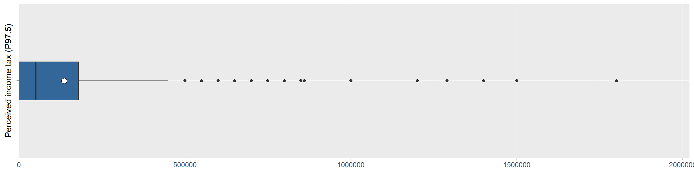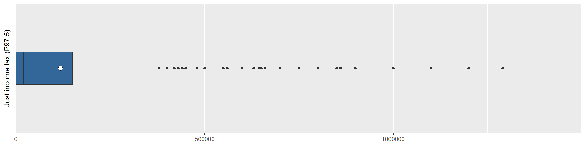
nota <- "Nota: se excluyen valores mayores al P97.5"
sjPlot::plot_frq(data = vig_resp$taxperc.rec,type = "histogram",show.mean = T)+labs(caption = nota)
sjPlot::plot_frq(data = vig_resp$taxjust.rec,type = "histogram",show.mean = T)+labs(caption = nota)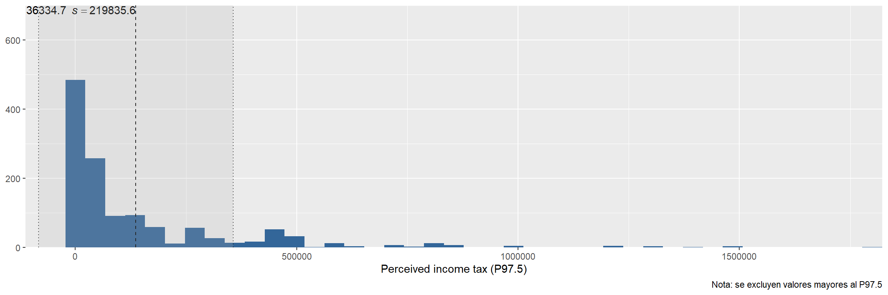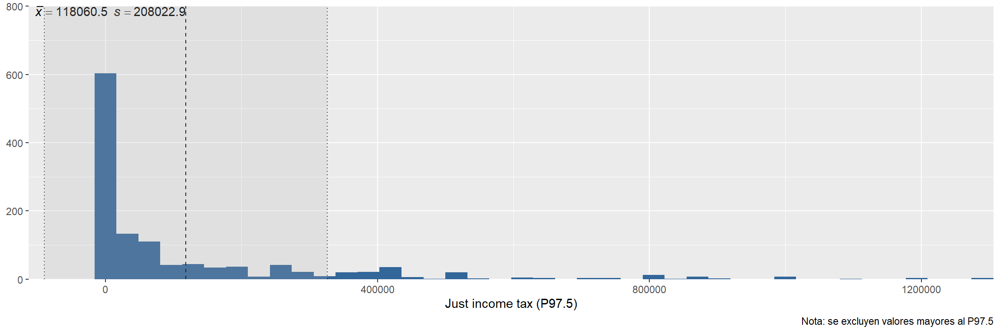
sjmisc::frq(vig_resp$taxperc==0,title = "Cantidad de respuestas $0 en taxperc")##
## Cantidad de respuestas $0 en taxperc
## # total N=2184 valid N=1285 mean=0.26 sd=0.44
##
## Value | N | Raw % | Valid % | Cum. %
## --------------------------------------
## FALSE | 956 | 43.77 | 74.40 | 74.40
## TRUE | 329 | 15.06 | 25.60 | 100.00
## <NA> | 899 | 41.16 | <NA> | <NA>sjmisc::frq(vig_resp$taxjust==0,title = "Cantidad de respuestas $0 en taxjust") ##
## Cantidad de respuestas $0 en taxjust
## # total N=2184 valid N=1275 mean=0.37 sd=0.48
##
## Value | N | Raw % | Valid % | Cum. %
## --------------------------------------
## FALSE | 809 | 37.04 | 63.45 | 63.45
## TRUE | 466 | 21.34 | 36.55 | 100.00
## <NA> | 909 | 41.62 | <NA> | <NA>Vemos que en el caso de taxpec, las respuestas $0 son un 26,32%, mientras que en taxjust son un un 37,57%. Como vimos anteriormente en los modelos regresión, las respuesta no son independientes de los ingresos de la viñeta. Por tanto, se recomienda mantener estos valores.
Decisión: Finalmente filtramos y excluimos los valores en parte superior de ambas variables equivalentes a taxperc < 1855000 & taxjust< 1290000
vig_resp <- vig_resp %>% filter(taxperc < 1855000 & taxjust< 1290000)6.2 Alternativa A: incluye $0
Realizamos la transformación en escala logarítmica sobre taxperc y taxjust, manteniendo las respuestas $0:
vig_resp$taxperc.ln<- log(vig_resp$taxperc+(min(vig_resp$taxperc,na.rm = T)+1))
set_label(vig_resp$taxperc.ln) <- "ln(perceived tax) - include $0"
vig_resp$taxjust.ln<- log(vig_resp$taxjust+(min(vig_resp$taxjust,na.rm = T)+1))
set_label(vig_resp$taxjust.ln) <- "ln(just tax) - include $0"sjPlot::plot_frq(data = vig_resp$taxperc.ln,type = "histogram",show.mean = T)
sjPlot::plot_frq(data = vig_resp$taxjust.ln,type = "histogram",show.mean = T)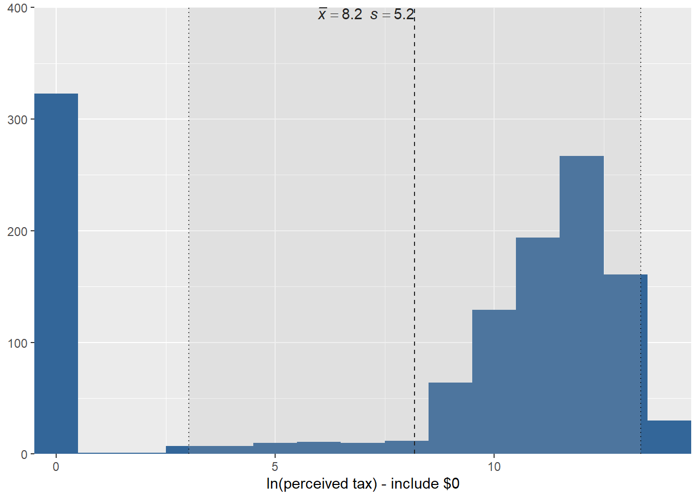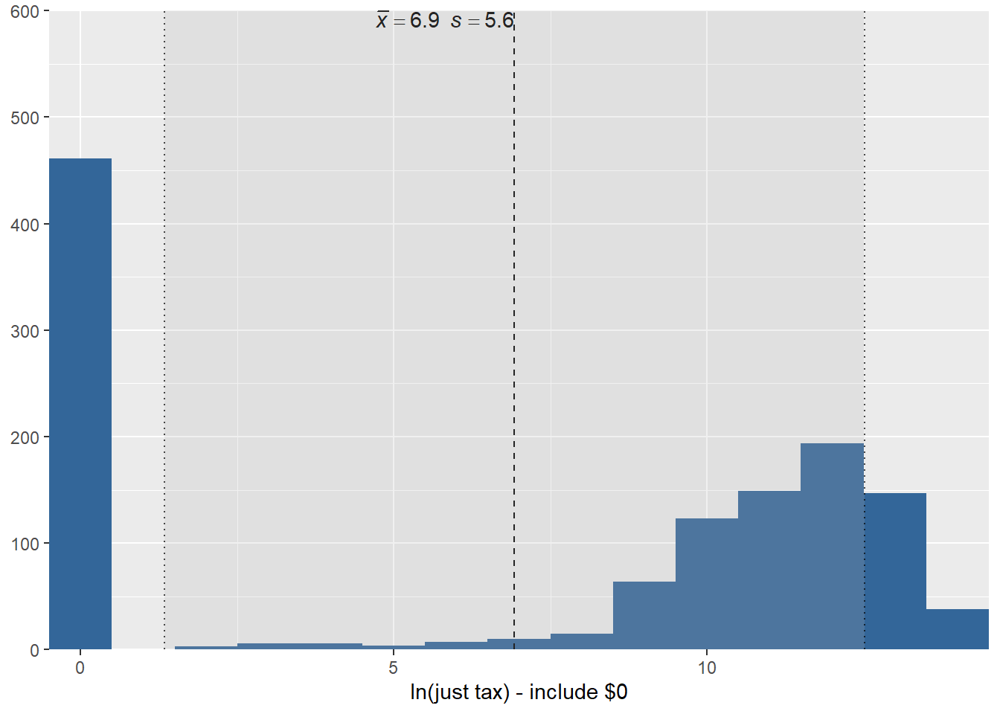
6.3 Alternativa B: excluye $0
Realizamos la transformación en escala logarítmica sobre taxperc y taxjust, excluyendo las respuestas $0:
vig_resp$taxperc.b <- vig_resp$taxperc
vig_resp$taxperc.b[vig_resp$taxperc.b==0] <- NA
vig_resp$taxperc.ln2<- log(vig_resp$taxperc.b+(min(vig_resp$taxperc.b,na.rm = T)+1));vig_resp$taxperc.b=NULL
set_label(vig_resp$taxperc.ln2) <- "ln(perceived tax) - exclude $0"vig_resp$taxjust.b <- vig_resp$taxjust
vig_resp$taxjust.b[vig_resp$taxjust.b==0] <- NA
vig_resp$taxjust.ln2<- log(vig_resp$taxjust.b+(min(vig_resp$taxjust.b,na.rm = T)+1));vig_resp$taxjust.b=NULL
set_label(vig_resp$taxjust.ln2) <- "ln(just tax) - exclude $0"sjPlot::plot_frq(data = vig_resp$taxperc.ln2,type = "histogram",show.mean = T)
sjPlot::plot_frq(data = vig_resp$taxjust.ln2,type = "histogram",show.mean = T)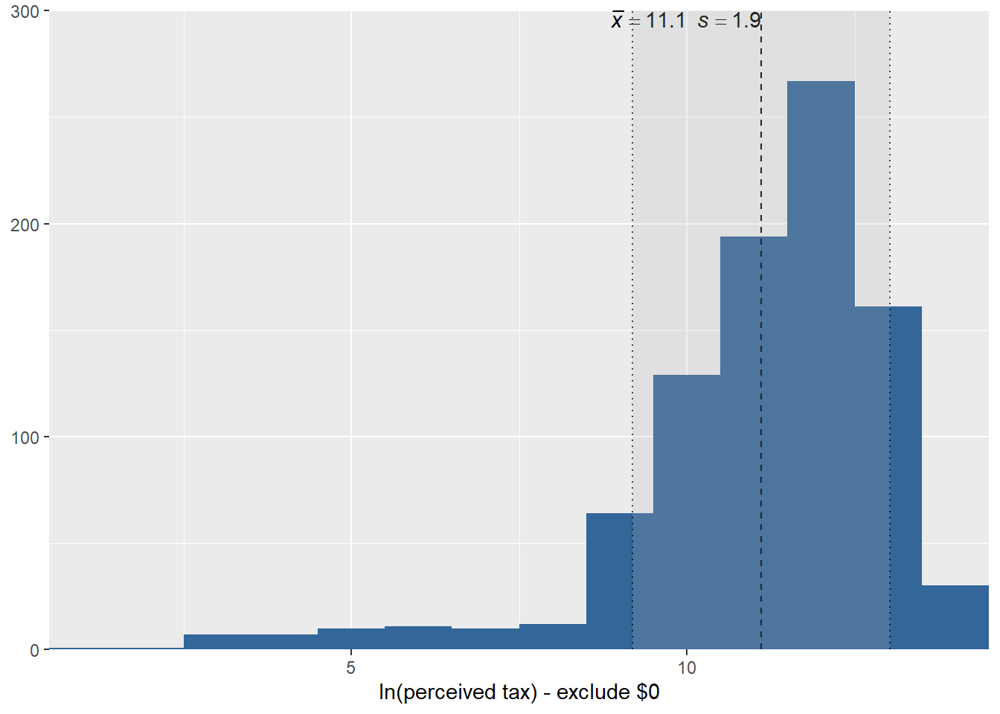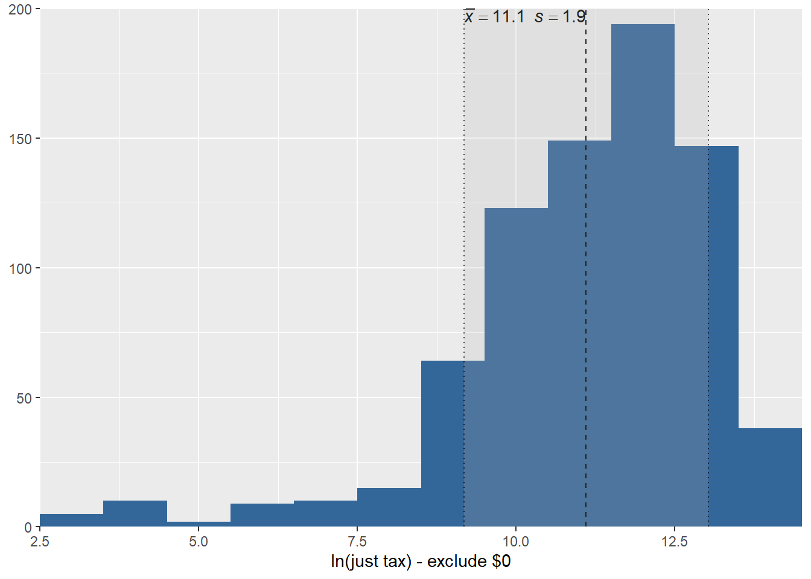
7 General descriptives
print(dfSummary(vig_resp, headings = FALSE), method = "render")| No | Variable | Label | Stats / Values | Freqs (% of Valid) | Graph | Valid | Missing | ||||||||||||||||||||||||||||||||||||||||||||||||||||||||||||
|---|---|---|---|---|---|---|---|---|---|---|---|---|---|---|---|---|---|---|---|---|---|---|---|---|---|---|---|---|---|---|---|---|---|---|---|---|---|---|---|---|---|---|---|---|---|---|---|---|---|---|---|---|---|---|---|---|---|---|---|---|---|---|---|---|---|---|---|
| 1 | respondeid [character] | Id Respondent | 1. R_10NnrJvdvFAvKLR 2. R_12uptnfARw66lc3 3. R_1DMTS8aub1Tu8uP 4. R_1DO5haQE0Z18oQI 5. R_1g13x31gJdeJuAR 6. R_1hGPOWOz9p62dm5 7. R_1hL6jN0K3VT6gxt 8. R_1JOZZBy7Ol8e7L3 9. R_1Nz6p9tCsKWzrXN 10. R_1OZyLS7yoRfozqd [ 130 others ] |
|
 |
1227 (100%) | 0 (0%) | ||||||||||||||||||||||||||||||||||||||||||||||||||||||||||||
| 2 | deck [integer] | Id Deck | Mean (sd) : 5.5 (3) min < med < max: 1 < 6 < 10 IQR (CV) : 5 (0.5) |
|
 |
1227 (100%) | 0 (0%) | ||||||||||||||||||||||||||||||||||||||||||||||||||||||||||||
| 3 | id [integer] | Id Vignette | Mean (sd) : 6.5 (3.4) min < med < max: 1 < 7 < 12 IQR (CV) : 5 (0.5) | 12 distinct values |  |
1227 (100%) | 0 (0%) | ||||||||||||||||||||||||||||||||||||||||||||||||||||||||||||
| 4 | deck_vig [character] | Id deck and vignette | 1. 24 2. 26 3. 28 4. 103 5. 14 6. 102 7. 19 8. 211 9. 27 10. 58 [ 110 others ] |
|
 |
1227 (100%) | 0 (0%) | ||||||||||||||||||||||||||||||||||||||||||||||||||||||||||||
| 5 | taxperc [numeric] | Perceived income tax | Mean (sd) : 128778.4 (197905.7) min < med < max: 0 < 50000 < 1500000 IQR (CV) : 180000 (1.5) | 153 distinct values |  |
1227 (100%) | 0 (0%) | ||||||||||||||||||||||||||||||||||||||||||||||||||||||||||||
| 6 | taxjust [numeric] | Just income tax | Mean (sd) : 115190.9 (200751) min < med < max: 0 < 20000 < 1200000 IQR (CV) : 125000 (1.7) | 135 distinct values |  |
1227 (100%) | 0 (0%) | ||||||||||||||||||||||||||||||||||||||||||||||||||||||||||||
| 7 | finished [numeric] | Finished survey | Min : 0 Mean : 0.7 Max : 1 |
|
 |
1227 (100%) | 0 (0%) | ||||||||||||||||||||||||||||||||||||||||||||||||||||||||||||
| 8 | sexo.re [numeric] | Gender (respondent level) | Min : 1 Mean : 1.7 Max : 2 |
|
 |
1182 (96.33%) | 45 (3.67%) | ||||||||||||||||||||||||||||||||||||||||||||||||||||||||||||
| 9 | edad.re [numeric] | Age (respondent level) | Mean (sd) : 4.4 (0.9) min < med < max: 1 < 5 < 5 IQR (CV) : 1 (0.2) |
|
 |
1222 (99.59%) | 5 (0.41%) | ||||||||||||||||||||||||||||||||||||||||||||||||||||||||||||
| 10 | educ.re [numeric] | Education (respondent level) | Mean (sd) : 7.5 (1.8) min < med < max: 2 < 7 < 10 IQR (CV) : 3 (0.2) |
|
 |
1227 (100%) | 0 (0%) | ||||||||||||||||||||||||||||||||||||||||||||||||||||||||||||
| 11 | ingresos.re [numeric] | Income in CLP (respondent level) | Mean (sd) : 10.7 (2.5) min < med < max: 1 < 11 < 14 IQR (CV) : 2 (0.2) | 12 distinct values |  |
872 (71.07%) | 355 (28.93%) | ||||||||||||||||||||||||||||||||||||||||||||||||||||||||||||
| 12 | estlab.re [numeric] | Job status (respondent level) | Mean (sd) : 3.3 (2.3) min < med < max: 1 < 2 < 9 IQR (CV) : 4 (0.7) |
|
 |
884 (72.05%) | 343 (27.95%) | ||||||||||||||||||||||||||||||||||||||||||||||||||||||||||||
| 13 | comuna [numeric] | Comuna (respondent level) | Mean (sd) : 191.6 (102.3) min < med < max: 10 < 214 < 341 IQR (CV) : 185 (0.5) | 55 distinct values |  |
877 (71.48%) | 350 (28.52%) | ||||||||||||||||||||||||||||||||||||||||||||||||||||||||||||
| 14 | sexo.vig [numeric] | Gender (vignette level) | Min : 1 Mean : 1.5 Max : 2 |
|
 |
1227 (100%) | 0 (0%) | ||||||||||||||||||||||||||||||||||||||||||||||||||||||||||||
| 15 | apellido.vig [numeric] | Etnicity - surname (vignette level) | Mean (sd) : 2.5 (1.1) min < med < max: 1 < 2 < 4 IQR (CV) : 2 (0.4) |
|
 |
1227 (100%) | 0 (0%) | ||||||||||||||||||||||||||||||||||||||||||||||||||||||||||||
| 16 | edad.vig [numeric] | Age (vignette level) | Mean (sd) : 2 (0.8) min < med < max: 1 < 2 < 3 IQR (CV) : 2 (0.4) |
|
 |
1227 (100%) | 0 (0%) | ||||||||||||||||||||||||||||||||||||||||||||||||||||||||||||
| 17 | nse_ori.vig [numeric] | SES of origin (vignette level) | Mean (sd) : 2 (0.8) min < med < max: 1 < 2 < 3 IQR (CV) : 2 (0.4) |
|
 |
1227 (100%) | 0 (0%) | ||||||||||||||||||||||||||||||||||||||||||||||||||||||||||||
| 18 | educ.vig [numeric] | Education (vignette level) | Mean (sd) : 3 (1.4) min < med < max: 1 < 3 < 5 IQR (CV) : 2 (0.5) |
|
 |
1227 (100%) | 0 (0%) | ||||||||||||||||||||||||||||||||||||||||||||||||||||||||||||
| 19 | necesidades.vig [numeric] | Needs - number of children (vignette level) | Mean (sd) : 2.5 (1.1) min < med < max: 1 < 3 < 4 IQR (CV) : 2 (0.4) |
|
 |
1227 (100%) | 0 (0%) | ||||||||||||||||||||||||||||||||||||||||||||||||||||||||||||
| 20 | educ_madre.vig [numeric] | Mother's education level (vignette level) | Mean (sd) : 3 (1.4) min < med < max: 1 < 3 < 5 IQR (CV) : 2 (0.5) |
|
 |
1227 (100%) | 0 (0%) | ||||||||||||||||||||||||||||||||||||||||||||||||||||||||||||
| 21 | ingresos.vig [numeric] | Income in CLP (vignette level) | Mean (sd) : 2.9 (1.4) min < med < max: 1 < 3 < 5 IQR (CV) : 2 (0.5) |
|
 |
1227 (100%) | 0 (0%) | ||||||||||||||||||||||||||||||||||||||||||||||||||||||||||||
| 22 | pertax.0 [factor] | 1. 0 2. 1 |
|
 |
1227 (100%) | 0 (0%) | |||||||||||||||||||||||||||||||||||||||||||||||||||||||||||||
| 23 | justax.0 [factor] | 1. 0 2. 1 |
|
 |
1227 (100%) | 0 (0%) | |||||||||||||||||||||||||||||||||||||||||||||||||||||||||||||
| 24 | taxperc.rec [numeric] | Perceived income tax (P97.5) | Mean (sd) : 128778.4 (197905.7) min < med < max: 0 < 50000 < 1500000 IQR (CV) : 180000 (1.5) | 153 distinct values | |
1227 (100%) | 0 (0%) | ||||||||||||||||||||||||||||||||||||||||||||||||||||||||||||
| 25 | taxjust.rec [numeric] | Just income tax (P97.5) | Mean (sd) : 115190.9 (200751) min < med < max: 0 < 20000 < 1200000 IQR (CV) : 125000 (1.7) | 135 distinct values | |
1227 (100%) | 0 (0%) | ||||||||||||||||||||||||||||||||||||||||||||||||||||||||||||
| 26 | taxperc.ln [numeric] | ln(perceived tax) - include $0 | Mean (sd) : 8.2 (5.2) min < med < max: 0 < 10.8 < 14.2 IQR (CV) : 12.1 (0.6) | 153 distinct values |  |
1227 (100%) | 0 (0%) | ||||||||||||||||||||||||||||||||||||||||||||||||||||||||||||
| 27 | taxjust.ln [numeric] | ln(just tax) - include $0 | Mean (sd) : 6.9 (5.6) min < med < max: 0 < 9.9 < 14 IQR (CV) : 11.7 (0.8) | 135 distinct values |  |
1227 (100%) | 0 (0%) | ||||||||||||||||||||||||||||||||||||||||||||||||||||||||||||
| 28 | taxperc.ln2 [numeric] | ln(perceived tax) - exclude $0 | Mean (sd) : 11.1 (1.9) min < med < max: 1.1 < 11.5 < 14.2 IQR (CV) : 2.1 (0.2) | 152 distinct values |  |
904 (73.68%) | 323 (26.32%) | ||||||||||||||||||||||||||||||||||||||||||||||||||||||||||||
| 29 | taxjust.ln2 [numeric] | ln(just tax) - exclude $0 | Mean (sd) : 11.1 (1.9) min < med < max: 2.8 < 11.4 < 14 IQR (CV) : 2.1 (0.2) | 134 distinct values |  |
766 (62.43%) | 461 (37.57%) |
Generated by summarytools 0.9.6 (R version 4.0.0)
2020-08-21
8 Save data
save(vig_resp,file = "input/data/proc/vig_resp-a.RData")9 Session info
sessioninfo::session_info()## - Session info ----------------------------------------------------------------------
## setting value
## version R version 4.0.0 (2020-04-24)
## os Windows 10 x64
## system x86_64, mingw32
## ui RStudio
## language (EN)
## collate Spanish_Chile.1252
## ctype Spanish_Chile.1252
## tz America/Santiago
## date 2020-08-21
##
## - Packages --------------------------------------------------------------------------
## package * version date lib source
## assertthat 0.2.1 2019-03-21 [1] CRAN (R 4.0.0)
## backports 1.1.6 2020-04-05 [1] CRAN (R 4.0.0)
## base64enc 0.1-3 2015-07-28 [1] CRAN (R 4.0.0)
## bayestestR 0.6.0 2020-04-20 [1] CRAN (R 4.0.0)
## blob 1.2.1 2020-01-20 [1] CRAN (R 4.0.0)
## bookdown 0.18 2020-03-05 [1] CRAN (R 4.0.0)
## boot 1.3-24 2019-12-20 [2] CRAN (R 4.0.0)
## broom 0.5.6 2020-04-20 [1] CRAN (R 4.0.0)
## callr 3.4.3 2020-03-28 [1] CRAN (R 4.0.0)
## captioner * 2.2.3 2015-07-16 [1] CRAN (R 4.0.0)
## cellranger 1.1.0 2016-07-27 [1] CRAN (R 4.0.0)
## checkmate 2.0.0 2020-02-06 [1] CRAN (R 4.0.0)
## cli 2.0.2 2020-02-28 [1] CRAN (R 4.0.0)
## coda 0.19-3 2019-07-05 [1] CRAN (R 4.0.0)
## codetools 0.2-16 2018-12-24 [2] CRAN (R 4.0.0)
## colorspace 1.4-1 2019-03-18 [1] CRAN (R 4.0.0)
## crayon 1.3.4 2017-09-16 [1] CRAN (R 4.0.0)
## data.table * 1.12.8 2019-12-09 [1] CRAN (R 4.0.0)
## DBI 1.1.0 2019-12-15 [1] CRAN (R 4.0.0)
## dbplyr 1.4.4 2020-05-27 [1] CRAN (R 4.0.0)
## digest 0.6.25 2020-02-23 [1] CRAN (R 4.0.0)
## dplyr * 0.8.5 2020-03-07 [1] CRAN (R 4.0.0)
## effectsize 0.3.0 2020-04-11 [1] CRAN (R 4.0.0)
## ellipsis 0.3.0 2019-09-20 [1] CRAN (R 4.0.0)
## emmeans 1.4.6 2020-04-19 [1] CRAN (R 4.0.0)
## estimability 1.3 2018-02-11 [1] CRAN (R 4.0.0)
## evaluate 0.14 2019-05-28 [1] CRAN (R 4.0.0)
## fansi 0.4.1 2020-01-08 [1] CRAN (R 4.0.0)
## farver 2.0.3 2020-01-16 [1] CRAN (R 4.0.0)
## forcats * 0.5.0 2020-03-01 [1] CRAN (R 4.0.0)
## fs 1.4.1 2020-04-04 [1] CRAN (R 4.0.0)
## generics 0.0.2 2018-11-29 [1] CRAN (R 4.0.0)
## ggeffects 0.14.3 2020-04-20 [1] CRAN (R 4.0.0)
## ggplot2 * 3.3.0 2020-03-05 [1] CRAN (R 4.0.0)
## glue 1.4.0 2020-04-03 [1] CRAN (R 4.0.0)
## gridExtra 2.3 2017-09-09 [1] CRAN (R 4.0.0)
## gtable 0.3.0 2019-03-25 [1] CRAN (R 4.0.0)
## haven 2.3.1 2020-06-01 [1] CRAN (R 4.0.2)
## highr 0.8 2019-03-20 [1] CRAN (R 4.0.0)
## hms 0.5.3 2020-01-08 [1] CRAN (R 4.0.0)
## htmltools 0.4.0 2019-10-04 [1] CRAN (R 4.0.0)
## httr 1.4.1 2019-08-05 [1] CRAN (R 4.0.0)
## inline 0.3.15 2018-05-18 [1] CRAN (R 4.0.0)
## insight 0.8.3 2020-04-20 [1] CRAN (R 4.0.0)
## jsonlite 1.6.1 2020-02-02 [1] CRAN (R 4.0.0)
## kableExtra * 1.1.0 2019-03-16 [1] CRAN (R 4.0.0)
## knitr * 1.28 2020-02-06 [1] CRAN (R 4.0.0)
## labeling 0.3 2014-08-23 [1] CRAN (R 4.0.0)
## lattice 0.20-41 2020-04-02 [2] CRAN (R 4.0.0)
## lifecycle 0.2.0 2020-03-06 [1] CRAN (R 4.0.0)
## lme4 * 1.1-23 2020-04-07 [1] CRAN (R 4.0.0)
## loo 2.2.0 2019-12-19 [1] CRAN (R 4.0.0)
## lubridate 1.7.8 2020-04-06 [1] CRAN (R 4.0.0)
## magick 2.3 2020-01-24 [1] CRAN (R 4.0.0)
## magrittr 1.5 2014-11-22 [1] CRAN (R 4.0.0)
## MASS 7.3-51.5 2019-12-20 [2] CRAN (R 4.0.0)
## Matrix * 1.2-18 2019-11-27 [2] CRAN (R 4.0.0)
## matrixStats 0.56.0 2020-03-13 [1] CRAN (R 4.0.0)
## mice * 3.9.0 2020-05-14 [1] CRAN (R 4.0.0)
## minqa 1.2.4 2014-10-09 [1] CRAN (R 4.0.0)
## modelr 0.1.7 2020-04-30 [1] CRAN (R 4.0.0)
## munsell 0.5.0 2018-06-12 [1] CRAN (R 4.0.0)
## mvtnorm 1.1-0 2020-02-24 [1] CRAN (R 4.0.0)
## nlme 3.1-147 2020-04-13 [2] CRAN (R 4.0.0)
## nloptr 1.2.2.1 2020-03-11 [1] CRAN (R 4.0.0)
## pander 0.6.3 2018-11-06 [1] CRAN (R 4.0.0)
## parameters 0.6.1 2020-04-08 [1] CRAN (R 4.0.0)
## performance 0.4.6 2020-05-03 [1] CRAN (R 4.0.0)
## pillar 1.4.4 2020-05-05 [1] CRAN (R 4.0.0)
## pkgbuild 1.0.8 2020-05-07 [1] CRAN (R 4.0.0)
## pkgconfig 2.0.3 2019-09-22 [1] CRAN (R 4.0.0)
## plyr 1.8.6 2020-03-03 [1] CRAN (R 4.0.0)
## prettyunits 1.1.1 2020-01-24 [1] CRAN (R 4.0.0)
## processx 3.4.2 2020-02-09 [1] CRAN (R 4.0.0)
## pryr 0.1.4 2018-02-18 [1] CRAN (R 4.0.0)
## ps 1.3.3 2020-05-08 [1] CRAN (R 4.0.0)
## purrr * 0.3.4 2020-04-17 [1] CRAN (R 4.0.0)
## R6 2.4.1 2019-11-12 [1] CRAN (R 4.0.0)
## rapportools 1.0 2014-01-07 [1] CRAN (R 4.0.0)
## RColorBrewer 1.1-2 2014-12-07 [1] CRAN (R 4.0.0)
## Rcpp 1.0.4.6 2020-04-09 [1] CRAN (R 4.0.0)
## readr * 1.3.1 2018-12-21 [1] CRAN (R 4.0.0)
## readxl * 1.3.1 2019-03-13 [1] CRAN (R 4.0.0)
## reprex 0.3.0 2019-05-16 [1] CRAN (R 4.0.0)
## rlang 0.4.6 2020-05-02 [1] CRAN (R 4.0.0)
## rmarkdown 2.1 2020-01-20 [1] CRAN (R 4.0.0)
## rstan 2.19.3 2020-02-11 [1] CRAN (R 4.0.0)
## rstudioapi 0.11 2020-02-07 [1] CRAN (R 4.0.0)
## rvest 0.3.5 2019-11-08 [1] CRAN (R 4.0.0)
## scales 1.1.1 2020-05-11 [1] CRAN (R 4.0.0)
## sessioninfo * 1.1.1 2018-11-05 [1] CRAN (R 4.0.2)
## sjlabelled * 1.1.4 2020-04-30 [1] CRAN (R 4.0.0)
## sjmisc 2.8.4 2020-04-03 [1] CRAN (R 4.0.0)
## sjPlot * 2.8.3 2020-03-09 [1] CRAN (R 4.0.0)
## sjstats 0.18.0 2020-05-06 [1] CRAN (R 4.0.0)
## StanHeaders 2.19.2 2020-02-11 [1] CRAN (R 4.0.0)
## stargazer * 5.2.2 2018-05-30 [1] CRAN (R 4.0.0)
## statmod 1.4.34 2020-02-17 [1] CRAN (R 4.0.0)
## stringi * 1.4.6 2020-02-17 [1] CRAN (R 4.0.0)
## stringr * 1.4.0 2019-02-10 [1] CRAN (R 4.0.0)
## summarytools * 0.9.6 2020-03-02 [1] CRAN (R 4.0.0)
## texreg * 1.37.5 2020-08-10 [1] Github (leifeld/texreg@fafb343)
## tibble * 3.0.1 2020-04-20 [1] CRAN (R 4.0.0)
## tidyr * 1.0.3 2020-05-07 [1] CRAN (R 4.0.0)
## tidyselect 1.1.0 2020-05-11 [1] CRAN (R 4.0.0)
## tidyverse * 1.3.0 2019-11-21 [1] CRAN (R 4.0.0)
## tinytex 0.22 2020-04-17 [1] CRAN (R 4.0.0)
## utf8 1.1.4 2018-05-24 [1] CRAN (R 4.0.0)
## vctrs 0.3.0 2020-05-11 [1] CRAN (R 4.0.0)
## viridisLite 0.3.0 2018-02-01 [1] CRAN (R 4.0.0)
## webshot 0.5.2 2019-11-22 [1] CRAN (R 4.0.0)
## withr 2.2.0 2020-04-20 [1] CRAN (R 4.0.0)
## xfun 0.13 2020-04-13 [1] CRAN (R 4.0.0)
## xml2 1.3.2 2020-04-23 [1] CRAN (R 4.0.0)
## xtable 1.8-4 2019-04-21 [1] CRAN (R 4.0.0)
## yaml 2.2.1 2020-02-01 [1] CRAN (R 4.0.0)
##
## [1] C:/Users/Julio/Documents/R/win-library/4.0
## [2] C:/Program Files/R/R-4.0.0/library